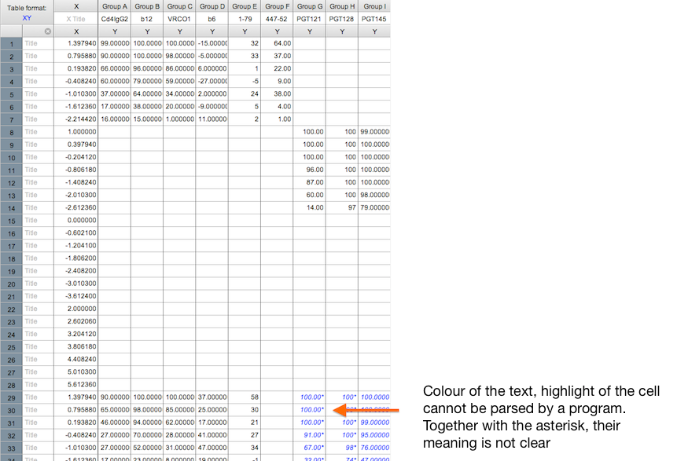

These slides are an adaptation of How to share data with a statistician by Jeff Leek (Johns Hopkins Bloomberg School of Public Health).
Code available on GitHub
Carsten & Osvaldo
Institute of Medical Virology, University of Zurich
These slides are an adaptation of How to share data with a statistician by Jeff Leek (Johns Hopkins Bloomberg School of Public Health).
Code available on GitHub
Moreover:
Raw data are often messy, we can't do much for them. But when we derive other data from them we can try to make it in a tidy way.
Examples:
.fcs file, before using Flowjo or anything else)..csv or .txt file from the plate reader (before loading into Excel)..tiff images..fastq formatAs we will see, this is an example of messy data.

If manipulated data is reported as raw, the statistician has to perform an autopsy to find out what went wrong.
Autopsies are
as fun as being hit by a (large) truck, with the downside of not being a fast process.
(adapted)
Tidy data are easy to clean and analyse.
There is no need to reinvent the wheel for each new dataset.
The development of tidy data has been driven by my struggles working with real-world datasets, which are often organised in bizarre ways. I have spent countless hours struggling to get these datasets organised in a way that makes data analysis possible, let alone easy.
(Hadley Wickham)
A tidy dataset follows three fundamental principles:
On point 3: no Excel Worksheets and use unique identifiers to link different tables.
The id column identifies the patient and will be used to link with
the next tables (first column is row number).
## id dob male female
## 1 25 1979-01-16 yes
## 2 64 20 sep 1984 y
Variables are listed in the columns rather than in the row. Dates and sex are reported inconsistently.
## id date_of_birth sex
## 1 25 1979-01-16 M
## 2 64 1984-09-20 F
Dates are reported in a consistent format YYYY-MM-YY, sex is now a variable
(reported in the column) and reported consistently (initial, capitalised).
This table reports results of some virology tests. The id column identifies
the patient so it can be used to link the previous table.
## id HIV HCV
## 1 25 3100 45000
## 2 64 0 85000
The analysts would need to adapt their tool if, say, another test were added.
## id test viral_load
## 1 25 HIV 3100
## 2 25 HCV 45000
## 3 64 HIV 0
## 4 64 HCV 85000
Easier to parse and analyse.
parse: analyse (a string or text) into logical syntactic components (Oxford Dictionary)
JRCSF all.pzf
JRCSF all.pzf
JRCSF all.pzf
JRCSF all.pzf
JRCSF all.pzf
JRCSF all.pzf
Please, remove the space from the file name: JRCSF all.pzf becomes
JRCSFall.pzf or JRCSF_all.pzf. Statistician often use linux for data
analysis and there empty spaces mark the beginning of a new command.
Then, applying the principles of tidy data, one has
## inhibitor assay_n log10_conc inhibition_percent other_info
## 1 Cd4IgG2 1 1.3979 99 <NA>
## 2 Cd4IgG2 1 0.7959 90 <NA>
## 3 Cd4IgG2 1 0.1938 66 <NA>
...
## inhibitor assay_n log10_conc inhibition_percent other_info
## 117 PGT145 2 -1.010 76 star
## 118 PGT145 2 -1.612 47 star
## 119 PGT145 2 -2.214 16 star
The code book contains a more detailed description of what is in the tidy dataset.
It should include
Generally speaking, variables can be:
NA)NA and set an
additional column censored to TRUE)Do not use anything that would not be kept in a simple text.
One reason why statisticians prefer to write programs/scripts to analyse data is that a set of written instructions can be reproduced exactly, unlike a set of mouse clicks.
If you don't know a programming language and you need to request/describe an analysis, you can use pseudocode: a detailed cooking recipe.